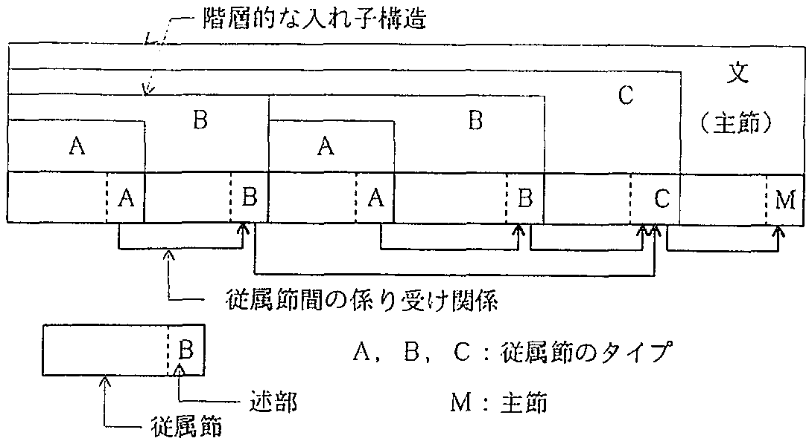
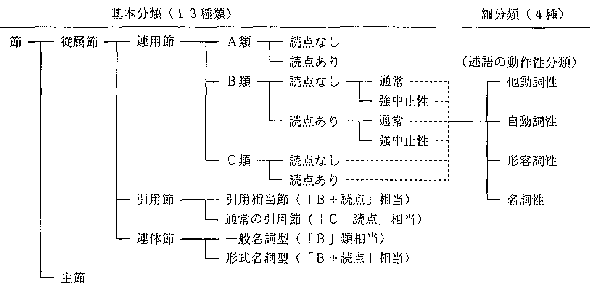
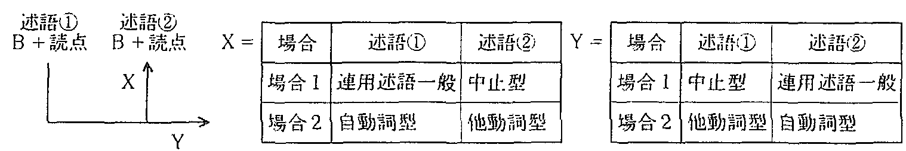
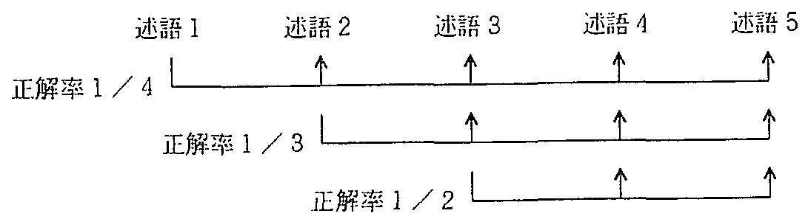

従来, 述語間の係り受け関係の曖味さの問題は, 長文解析の精度を低下させる大きな要因であった. この問題を解決するため, 日本語の意味的な階層的表現構造に着目した従属節間の係り受け解析方式を提案し, その効果を示した. 言語過程説の立場から見ると, 日本語述語の間には 書き手が対象をとらえて表現していく階層的な過程が反映していると考えられる. そこで, 本論文では, 日本語表出過程に着目した南不二男の3段階の階層的な従属節分類を, その意味と形式に着目して詳細化し, 主節と従属節の述語を基本分類13種, 細分類4種に分類した. そして, それらの階層的な順序関係を手がかりに, 述語間の係り受け関係を決定する方法を提案した. 新聞記事972文(述語数合計2,327件, そのうち係り先の曖昧な述語は, 661件)を対象とした実験結果によれば, 従来の方法では, 係り先の曖味な述語が356件残ったのに対して, 本論文の方法では, 54件に減少した. その結果, 述語間の係り受け関係の解析において, 係り先第1候補の正解率は, 92%から98%に向上した.
The ambiguity in dependency analysis of Japanese predicates has been one of the major causes of the failure of long sentence analyses. To overcome this problem, a new dependency analysis method for Japanese subordinate clauses based on semantically embedded structures was proposed and its accuracy was evaluated. In this paper, the three levels of hierarchical subordinate clauses proposed by the Japanese philologist Minami, were reviewed for their syntax and semantics, and broken down into 13 basic categories and 4 detailed categories. A hierarchical ordering of these categories yields the dependency relations between predicates. Experiments were conducted with some 972 newspaper article sentences (totaling 2,327 predicates of which 661 are classified as having ambiguous dependency). Whereas the conventional method leaves 356 predicates of ambiguous dependency, this number was reduced to 54 predicates by the new method Accordingly, the accuracy of the first candidate of the dependency relations within a sentence was improved from 92% to 98%.
自然言語の構文解析の方法として, 従来から多くの研究が行われ, 様々な方法が提案されている. それらの中で, 比較的自由な語順を取る日本語の構文解析としては, 省略などに強い係り受け解析の方法が適していると 考えられる1)が, 長い文になると, この方法も必ずしも良い成績が得られているとは言えない.
長文に対する係り受け解析で失敗する原因は, おおよそ, 並列を伴う名詞句および名詞句間の解析の曖味さと, 述語☆間の関係の認定の曖昧さにあると考えられる. このうち, 並列名詞句の扱いについては, 最近, 文節列の類似性に着目した方法が 提案された2)〜4)ほか, これを省略を含む部分的並列関係に拡張し, 省略を補って並列構造を抽出する方法5)が提案され, 解析精度の向上が得られる見込みとなった. 多少異なる角度からは, 呼応関係等の文構造を決定する要因に着目して, 係り受け関係解析を局所化する方法6)も提案されている. また, 格要素と述語間の関係の曖味さを絞り込む方法としては, 意味解析段階で動詞の結合価を使用する 方法等7)〜9)があり, かなりの効果が得られているが, 述語間の係り受けに対しては, 良い方法がなかった.
最近の研究結果からも分かるように, 従来の日本語の構文解析では, 日本語の表層的特徴を, まだ, 十分には使いきってはいない1)と考えられる. 表現内容と表現構造の関係が明らかになれば, 表層上の特徴に着目するだけでも, 今まで以上に精度の良い構文解析が実現できると期待される. 特に, 述語間の関係は, 文全体の構造を決める重要な関係であるが, 言語過程説☆によれば, このような文の構造には, 書き手が対象をとらえて, 表現していく階層的な過程が反映していると考えられる10).
そこで, 本論文では, 日本語の階層的な表現過程に着目して提案された, 南の3 段階の従属節分類11)を, さらに, 従属節の意味と形式に着目して, 係り述節, 受け述節ともに, 基本分類13種, 細分類4種に分類し, それらの相互関係を整理することにより, 述語間の係り受け関係を決定する方法を提案する. また, 新聞記事972文を対象とした係り受け解析において, 係り先の曖昧な述語の係り先を無作為に決定する方法, 直近の述語にかける方法, 従来のALTの方法12), 本論文の方法の解析精度を比較する.
(1) 日本語の4段階認識構造
日本語の文構造については, 古くから多くの研究が行われており, 書き手の対象に対する認識とその表現過程が, 日本文の階層的な構造に反映していることが指摘されている.
山田は, 日本語文では, 観念的内容は先頭に, 陳述に関する部分は後方に配列された階層性を持つことを 指摘した13). 時枝は, 客体に対して概念化された書き手の認識の表現(客体的表現)と主体の概念化されない判断, 感情の表現(主体的表現)が入れ子構造を形成することを 指摘した14). その後, 渡辺, 芳賀, 服部等によって, 述語の構成に関する詳細な研究が 行われた15)〜17). これらの研究成果に基づき, 林は, 描叙の段階, 判断の段階, 表出の段階, 伝達の段階の4段階からなる入れ子型の階層構造18)を提案した. これは, 入れ子の内側ほど客観性の高い認識が表現され, 入れ子の外側ほど主観性の強い内容が表現されることを4段階の階層構造として整理したものである.
(2) 従属節の種類と性質
南は, 従属節を考える立場から, 林の4段階の階層構造を描叙, 判断, 提出, 表出の4段階に変更した19). そして, 日本語の動詞, 助動詞を中心に構成される述語は複雑な構造が持てること, その部分に表現の段階を示す要素の多くが含まれていることに着目して, 日本語の節を入れ子の各段階に対応させて, 4種類に分類した. その上で, 南は, 表出段階の表現(呼びかけ, 働きかけなど)は, 主節には現れても, 従属節には現れないことに着目して, 従属節を次の3種類(3段階の階層)に分類した20).
| A類: | 「〜ながら」等. ほぼ林の描叙段階に相当 | |
| B類: | 「〜たら, 〜と, 〜なら, 〜ので, 〜のに, 〜ば, 〜て(従属的用法)」等. ほぼ林の判断段階に相当 | |
| C類: | 「〜が(順接), 〜から, 〜けれど, 〜し, 〜て(独立した用法)」等. ほぼ林の表出段階に相当 |
(3) 従属節間の依存関係
南は, さらに, 上記の3種類の従属節間に, 次の強い傾向があることを明らかにした.
| �� | A類は, 他のA類, B類, C類の一部となることができる. | |
| �� | B類は, 他のB類, C類の一部となれるが, A類の一部とはなれない. | |
| �� | C類は, 他のC類の一部とはなれるが, A類, B類の一部とはなれない. |
言語処理の立場から, 節をその形態に着目して分類すると, 主節のほか, 連用節, 連体節, 引用節の3種の従属節に分けられる. このうち主節は, 他の節の係り先にはなるが係り元にはなり得ない. また, 連体節は述語の活用形などの文法的性質によって係り先が明確に決まる. 引用節は, 引用の助詞等を伴うことが多く, 係られる側の動詞のタイプが限定されるなど, 形態的にその係り先がほぼ明確である. したがって, 述語間の係り受け解析で問題となるのは, 係り元が連用節である場合, すなわち, 連用節から連用節へ, 連用節から連体節へ, 連用節から引用節への三つの係り受け関係である.
|
 |
(1) 従属節の基本的階層関係
本節では, まず, 出現頻度が高く, 係り受けが曖昧となりやすい連用節同士の係り受け関係について考える. この問題に対して, 前節で述べた南の従属節3分類の応用を考える. 2章(3)の結果を従属節の包含関係から見ると, A＜B＜C の関係が成り立つ. ただし, 記号“＜”は左辺が右辺に含まれる (左辺は右辺より優先度が低い☆)ことを意味する. また, ある節Xが他の節Yの一部となれるということは, 係り受け関係から見ると, XはYに係ることができるということである. 逆に, ある節Xが他の節Yの一部となれないということは, XはYに係れない, すなわち, XはYを飛び越えて, より後方の節に係るということである. したがって, 図1に示すように, 包含関係の内側にある述語は, 外側の述語に係れるが, 外側にある述語は, 内側にある述語には係れないことになる.
(2) 従属節再分類
上記の関係は述語間の係り受け決定に利用できると考えられるが, 南の分類では, 接続が順接か逆接かなど, 意味的な判断が必要であるため, 構文解析段階でそれを判断し, 分類するのは困難である. そこで, 南の分類の趣旨を生かしながら, 語尾表現をより長単位で分類すること, 意味的判断の困難な表記はデフォルトの解釈で分類することなどにより, 従属節を次のとおり再分類する.
| A類: | 「同時」の表現. | |
| B類: | 「原因」, 「中止」の表現. | |
| C類: | 「独立」の表現. |
この分類では, 表層的に明らかにA類またはC類と判定できるもの以外は, B類に分類した. したがって, 南の分類に比べると, B類の範囲が広くなっているが, 分類相互の包含関係の傾向は保存されていると期待される. この基準で, 日経産業新聞の記事文☆☆に現れた 従属節を分類した例を表1に示す.
| 分類 | 新聞記事972文に現れた述部[(n): nは出現回数] |
| A類 | 〜とともに(7), 〜ながら(2), 〜と同時に(2), 〜ことに加えて(1), 〜つつ(1),
〜ことを含め(1), 〜のをはじめ(1).
合計7種類、延ベ度数15回 |
| B類 | 〜(連用形単独)(159), 〜て(含:「連用形+で」)(148), 〜(サ変動詞の語尾省略)(94),
〜で(「名詞+で」)(47), 〜ため(28), 〜ており(25), 〜(体言止め「名詞+読点」)(20),
〜ほか(16), 〜ば(9), 〜もので(9), 〜ても(9), 〜ことで(8), 〜ので(4), 〜と(4),
〜ず(4), 〜たり(3), 〜ために(3), 〜うえで(3入〜後(2), 〜のに対応(2),
〜のに統き(2), 〜ためで(2), 〜そうで(2), 〜上で(1), 〜時や(1), 〜時に(1),
〜際に(1), 〜際(1), 〜結果(1), 〜以上(1), 〜よう(1), 〜ものの(1),
〜のを手始めに(1), 〜のを機に(1), 〜のに応じて(1), 〜ところ(1), 〜ておいて(1),
〜だけに(1), 〜だけでなく(1), 〜たら(1), 〜たびに(1), 〜ずに(1),
〜こともあって(1), 〜うえ(1), 〜のに対し(1), 〜なら(1)
合計46種類、延べ度数626回 |
| C類 | 〜が(42)
合計1種類、延べ度数42回 |
(3) 読点の有無による分類
さて, 述語間の係り受けに曖味さが生じるのは, 二つ以上の従属節がある場合である. そこで, 前述の新聞記事からそのような文を抽出して, 各従属節の出現頻度を調べたところ, A類5%, B類86%余り, C類9%余りで, 圧倒的にB類が多いことが 分かった☆☆☆.
そこで, 書き手の習性として, 解釈しにくい曖味さのある文では, 書き手自身が読点“、”を入れる傾向があること, 特に, 従属節を含む長文ではその傾向が強いこと, に着目して, 従属節A, B, Cの分類に, さらに, 読点の有無を加えた6種類の分類を考える. 書き手が読点を付与した従属節は, それだけ, 遠くに係る可能性が強い, すなわち, 独立性が強いと考えられるから, それぞれの従属節の包含関係は, A＜「A+読点」＜B＜「B+読点」＜C＜「C+読点」となることが予想される.
新聞記事の例では, B類の従属節のうち, 読点を持つものと持たないものとが, ほぼ同数見られる. したがって, 読点を考慮したことにより, B類同士の係り受けの約半数は, 曖味なく決定できると期待される.
(1) 連用節の中止性
上記の方法では, B類同士, 「B+読点」類同士の係り受け関係は決定できない. そこで, このタイプの述語について, より詳細に分類することが必要である.
そこで, B類の述語表現を, 表現の意味的な流れの中止性の強さに着目して分類することを考える. この観点から, B類の述部を分類すると, 以下のようになる.
| 中 | 止性の弱いもの | |
| 〜(用言連用形), 〜て, 〜(ナ変動詞語尾省略), 〜ため, 〜ほか, 〜ば, 〜ても | ||
| 中 | 止性の強いもの | |
| (名詞)で, 〜ており, 〜もので, 〜ことで |
前者のタイプは, 行為の継続, 並行, 順序等の意味に使用される表現であり, 中止性が弱い傾向を持つのに対して, 後者のタイプは, 前置き的な内容を表すなど, 主題の変わり目に使用される表現で, 中止性が強いと考えられる☆.
中止性の強い述語ほど遠くに係る傾向があると推定されるから, 次のヒューリスティックスを導入する.
| �� | 連用節述語のうち, 中止性の強いB類の述語は, 他の連用節述語を飛び越える. 逆に, 他の述語は, 次に現れた連用節述語に係る. | |
| �� | 連用形の単独型は, 他の連用形の単独型を飛び越えないで, それに係る. |
(2) 述語の状態性と動作性
連用節のうち, B類同士, 「B+読点」類同士の係り受けを決めるため, 次に, 述語の状態性もしくは動作性に着目する. 述語は, その動作性から見ると, 動作性の強い順(状態性の弱い順)に, 他動詞性, 自動詞性, 形容詞性, 名詞性の4種の述語に分類することができる. ただし, 使役系の表現は他動詞性, 受身系の表現は自動詞性とする.
ここで, 言語の表現過程を考察すると, 読者に分かりやすくするため, 書き手は主題や動作主体を統一的にとらえて表現する傾向がある. このため, 動作性の述語と状態性の述語が同一レベルで表現されることは少ないと考えられる. また, 状態性の強い述語は, 動作性の強い述語に包み込まれる傾向を持つ. これらの傾向に着目して, 次のヒューリスティックスを設ける.
| 〇 | 動作性の強い述語は, 動作性の弱い述語を飛び越し, 動作性の弱い述語は, 動作性の強い述語に係る. |
ところで, 連用節の中には, 用言が格助詞相当語の一部として使用される 「〜と比べ(〜より)高い値段」のようなものがある. このタイプの連用節は, 他の述語の格要素として使用されたものである. そのため, 述語間の係り受けとしてではなく, 用言と体言の格係り関係の一部として扱う必要がある.
3.2節, 3.3節において, 3.1節で示した述語間係り受けの3種類の問題のうち, 連用述語間の係り受けについて検討した. ここでは, 残された「連用節から引用節ヘ」, 「連用節から連体節へ」の2種類の係り受けについて検討する.
まず, 連用節と引用節の関係を見ると, 「〜すると(発表する)」などの引用節は独立性が高いため, 連用節が引用節を飛び越えて他の節に係ることは考えにくい. しかし, 「〜するよう(依頼する)」など, 様態化し独立性が弱められた引用相当節の場合は, 飛び越えられる可能性もある. そこで,
| �� | 引用節述語は, 連用節述語の「C+読点」に準ずる. | |
| �� | 引用相当節述語は, 「B+読点」に準ずる. |
として処理することとする.
次に, 連用節と連体節の関係を見る. 連体節を形式名詞「もの, こと, の」を伴うもの(〜したものが, 〜することを, 等)と その他の名詞性のものに分けて考えると, 形式名詞を伴う連体節は, 対象をとらえ直す21)ために 形式名詞が使用されたとも 考えられるので, 連用節がこれを越えて他の述語に係ることは考えにくい. これに対して, 普通の名詞性の連体節の場合は, 必ずしもそれが係り先になるとはいえない.
以上から, 連体節述語の扱いは, 次のとおりとする.
| �� | 形式名詞に係る連体節述語は, 連用節の「B+読点」に準ずる. | |
| �� | 通常の連体節述語は, Bに準ずる. |
前節の結果をまとめると, 表現の形態的特徴, 表出過程および意味的特徴から見た日本語の従属節は, 図2のとおり分類される.
|
 |
まず, 連用節は, A, B, C分類と読点の有無により, 6種類に分類し, その中の使用頻度の高いB類関連は, さらに, 中止性の強さで2種類に分類した. 引用節, 連体節は, 従属節の強さに応じて, 連用節のいずれかの分類に畳み込むように分類した. 係り受け関係を決定する上で, 以上の基本分類では足りないと見られるB類, C類では, 細分類として, 述語の動作性の強さに応じた4種類の分類を加えた.
係り受け関係を判定する規則は, 次に示す基本規則と派生規則から構成される.
[係り受け基本規則]
従属節6分類の優先順位(包含関係)に基づく規則 で, 次の基準で係り受け関係を絞り込む.
| �� | 優先度の低いものは, 高いものに係る. | |
| �� | 優光度の高いものは, 低いものに係らない. |
[係り受け派生規則]
従属節6分類で同一の優先度の関係にある節間の係り受け関係を判定する規則で, 図3に示すように, 係る条件(X), 係らない条件(Y)またはその双方が記述される. 述語��, �△�X, Yの条件に適合しないときは, この規則は適用されない. すなわち, 絞り込まれない. 最終的に絞り込めない曖昧さが残ったときは,複数の候補を生成する、
|
 |
付録図に係り受け解析の例を示す. この例では, 主節のほかに, 四つの従属節があるが, それらの係り受け関係は, 本論文の方法によって一意に決定される.
日経産業新開からランダムに選んだニュース記事300件の リード文☆(972文)に含まれる述語を対象に, 本論文の方法の効果を評価する. 対象とする文における述語数の分布を表2に示す. この表より, 972文の標本に含まれる述語は合計2,327件である. 係り先に曖昧さの生じる述語は, 述語数が3以上の文の場合で, 文中の後ろ側の二つの述語を除く述語に限られる. このことより, 表2から係り先の曖昧な述語数を求めると, 全体で661述語である.
| 述部の数 | 1 | 2 | 3 | 4 | 5 | 6 | 7 | 8 | 9 | 合計 |
| 文の数 | 278 | 320 | 204 | 100 | 40 | 18 | 8 | 3 | 1 | 972 |
| 文の割合 | 28.6% | 32.9% | 21.0% | 10.3% | 4.1% | 1.9% | 0.8% | 0.3% | 0.1% | 100% |
| 平均文字数 | 30.0 | 43.8 | 53.2 | 61.5 | 68.0 | 83.6 | 86.8 | 83.3 | 75.0 | 45.9 |
以下では, 上記の新聞記事文を対象とした係り受け解析において, 係り先の曖昧な述語の係り先を無作為に決定する方式, 直近の述語にかける方式, 従来のALT-J/Eの方式, 本論文の方式の解析精度を比較する.
(1) 完全な無作為方式の場合
上記の係り先の曖昧な661件の述語の係り先を, 無作為に決定したとしたときの正解率を考える. 例えば, 述語数が5の文の場合, 無作為方式では, 図4のように, 平均的に見て, 係り先の曖昧な述語3件中, 1/4+1/3+1/2＝1.083件は, 係り先が正しく決定できると考えられる. 同様にして, 述語数3以上の文の場合について計算すると, 661件中, 269.8件(40.8%)の述語は正しく決まる. 逆に, それ以外の391件は, 係り受け関係の決定に失敗することになる. 以上から, 無作為方式の場合, 2,327述語中, 係り受けに失敗する述語の割合は, 16.8%である.
|
 |
同様に, 無作為方式で係り先を決めた場合について, 文単位の述語係り受け正解率を求める. 述語数 k の文の数を n ( k ) とする. 述語数 k の文の場合, 述語間の係り受けの組合せ(係り受け候補)の数 L は, L ＝ ( k - 2 )! である. すべての候補の正解率が等しいとすると, 無作為に係り先を決めたときの文単位の係り受け誤り率は, (1 - 1 / L ) である☆. この方法で, 972文の述語間の係り受けの誤り文数を求めると, 236文となる.
(2) 係り受け交差を考慮した無作為方式の場合
特殊な場合を除いて, 係り受け関係は交差しないことが知られているので, 係り受け交差を禁止するという条件下で, 係り先を無作為に選択した場合について, 係り先選択に失敗する述語の数と係り先の誤った述語を含む文の数を求めると, それぞれ, 222述語, 151文となる.
(3) 直近係り方式の場合
経験的に, 係り受け解析では, 係り先が二つ以上あって曖昧なときは, 直近に現れる述語候補を係り先とするのが良いと言われている. そこで, 上記(2)の方法にさらに, この考えを加えた方法で係り先を決めたときの係り受け決定結果を正解と比較する. 前と同様にして, 972文を対象に評価した結果によれば, 述語単位の係り受け失敗数と文単位の係り受け失敗数は, それぞれ, 189述語, 185文であった.
(4) 読点を考慮した直近係り方式の場合
読点を持つ述語の場合は, 直近の述語よりもむしろ遠くの述語に係る場合が多いことが知られている. そこで, ここでは, (3)で, 読点を持つ述語は, むしろ, 直近の述語に係らないとした場合について評価する. 前と同様にして, 972文を対象に評価した結果によれぱ, 述語単位の係り受け失敗数と文単位の係り受け失敗数は, それぞれ, 112述語, 88文であった.
述語間の係り受け精度を, 上記の4方式と従来のALT-J/Eの係り受け解析方式および本論文の方式の6者で比較した 結果☆☆を表3に示す. これより, 従来方式と本論文の方式の関係では, 次のことが分かる.
| �� | 従来方式に比べ, 本論文の方式では, 係り先の曖昧な述部の数が15.3%から2.3%に減少し, その結果, 文単位に見て述語間係り受けが一意に決定できる文の割合は, 73.2%から94.4%に向上した. | |
| �� | 述語係り先の候補として得られた第1位の述語が係り先として正しくない割合は, 従来方式では, 3.9%であったが, 新方式では, 0.7%に減少した. その結果, 文の単位で見れば, 第1位の文解釈候補の正解率は, 91.8%から98.4%に向上した. |
また, 従来言われてきたヒューリスティックスに関 しても,
| �� | 無作為方式と直近係り先方式では, 直近係り先方式の方が良いと言われているが, 必ずしもそうとは言えない(表3の第2, 第3の方式参照). 文頭に, 独立した前提文のような従属節を持つことの多い新聞記事リード文のような場合は, 直近係り方式はむしろ精度が悪い. | |
| �� | 係り受け解析精度から見れぱ, 直近かどうかよりも, 読点の扱いの方が大切と考えられる. |
等が, 観察される.
|
述語単位の集計 (述語数合計: 2,327述部) |
文単位の集計 (候補文数合計: 972文) | ||||||||||
| 曖昧さの残る述部 | 誤り述部数(注1) | 曖昧さの残る述部 | 誤り文数(注1) | |||||||||
| 1 | 無作為選択方式1*1 | 661件 28.4% | 391件 16.8% |
372文 38.4% | 236文 24.3% | |||||||
| 2 | 無作為選択方式2*2 | 356件数 15.3% | 222件 9.5% |
260文 26.8% | 151文 15.6% | |||||||
| 3 | 直近係り選択方式1*3 | 189件 8.1% |
185文 18.8% | |||||||||
| 4 | 直近係り選択方式2*4 | 112件 4.8% |
88文 9.1% | |||||||||
| 5 | 従来の係り受け方式*5 | 92件 3.9% |
80文 8.2% | |||||||||
| 6 | 本論文の方式*6 | 54件 2.3% | 16件 0.7% |
54文 5.6% | 16文 1.6% | |||||||
| *1: | 述語種別を一切考慮しない無作為方式。 |
| *2: | 連用、連体、引用の述語種別を区別して、その性質を考慮した場合。 |
| また、保り受け交差を排除。その後、複数係り先候補は無作為に選択。 | |
| *3: | *2で、複数係り先候補は直近を選択。 |
| *4: | *3で、さらに読点を考慮した場合。 |
| *5: | 従来の日英機械翻択システムALT-J/Eの方式 |
| *6: | 本論文の方式。但し、曖昧さの残った係り受けでは、 |
| 直近係り選択方式2を採用した場合。 | |
| (注1) | 文単位に出力された正解候補の中の、第1位の候補を対象に集計した値。 |
|
長文解析の精度を低下させる大きな要因であった述語間の係り受け関係の曖昧さを解決するため, 日本語の意昧的な階層的表現構造に着目した, 従属節間の係り受け解析方式を提案した.
具体的には, 日本語表出過程に着目した南の3段階の階層的な従属節分類を見直すとともに, さらに, その意昧と形式に着目して基本分類13種, 細分類4種に詳細化し, それらの係り述節, 受け述節としての関係を分類整理することにより, 述語間の係り受け関係を決定する方法を提案した. また, 新聞記事972文(述語数合計2,327件, そのうち係り受け曖昧述語661件)を対象に, 係り先の曖昧な述語の係り先を無作為に決定する方法, 直近の述語にかける方式などと, 従来の方法, 本論文の方法の解析精度を比較評価した.
その結果によれば, 従来の方法では, 係り先の曖昧な述語が356件残ったのに対して, 本論文の方法では, 54件に減少することが分かった. 文単位に見れば, 述語間の関係が一意に決定できる文の割合は, 73.2%から94.4%に向上した. 係り受け関係が一意に決定できない述語に対しては, 複数の係り先候補が生成され, それを組み合わせて文単位の解析候補が出力されるが, そのとき生成された文単位の第1候補の正解率は, 91.8%から98,4%に向上した.
並列構造解析については既に解決の 見込み2),3)であることを考えあわせると, 本方式によって, 係り受け解析の2大問題(並列構造の解析, 述語間の関係解析)がともに解決される見込みとなった.
| 白井 諭 (正会員) 1978年大阪大学工学部通信工学科卒業. 1980年同大学院博士前期課程修了. 同年日本電信電話公社に入社. 以来, 日英機柊翻訳を中心とする自然言語処理の研究に従事. 現在, NTTコミュニケーション科学研究所主幹研究員. 1995年日本科学技術情報センタ賞(学術賞)受賞, 同年人工知能学会論文賞受賞. 電子情報通信学会, 言語処理学会, 各会員. |
| 池原 悟 (正会員) 1967年大阪大学基礎工学部電気工学科卒業. 1969年同大学院修士課程修了. 同年日本電信電話公社に入社. 以来, 数式処理, トラフィック理論, 自然言語処理の研究に従事. 現在, NTTコミュニケーション科学研究所研究グループ・リーダ(主幹研究員). 工学博士. 1982年情報処理学会論文賞, 1993年同学会研究賞, 1995年日本科学技術情報センタ賞(学術賞), 同年人工知能学会論文賞受賞. 電子情報通信学会, 人工知能学会, 言語処理学会, 各会員. |
| 横尾 昭男 (正会員) 1980年電気通信大学電気通信学部電子計算機学科卒業. 1982年同大学院修士課程修了. 同年日本電信電話公社に入社. 以来, 日英機械翻訳を中心とする自然言語処理の研究に従事. 現在, NTTコミュニケーション科学研究所主任研究員. 1995年日本科学技術情報センタ賞(学術賞)受賞. 電子情報通信学会, 人工知能学会, 言語処理学会, ACL, 各会員. |
| 木村 淳子 (正会員) 1989年構浜市立大学文理学部文科卒業. 同年NTT技術移転株式会社(現NTTアドバンステクノロジ株式会社)入社. 現在, 同社横須賀事業所情報技術部主任. 日英機械翻訳を中心とする自然言語処理の研究開発に従事. |